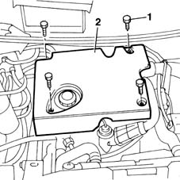

1016A10 sound-proofing cover - r + r
- Path
- Procedures > 10 ENGINE UNIT > 1016 CYLINDER HEAD/S > 1016A cam covers > 1016A10 sound-proofing cover - r + r
- Kind
- repair procedure (removal / refitting; the operation number is the code)
- Applies to
- engines: 1.9 JTD 8V; all production periods
- Interactive page
- https://sloeber94.github.io/elrnDB-fMltpl/en/#/2891354
Applies to: engines: 1.9 JTD 8V; all production periods
 Removing
Removing
 Refitting
Refitting1. Unscrew the nuts securing the protection to the engine.
2. Remove the guard from the engine bay.

Applies to: engines: 1.9 JTD 8V; all production periods
Refitting
RemovingFit the engine protection.
Tighten the retaining nuts.
Topics that link to this page (77)
- 1004B12 power unit with manual gearbox - r+r for versions with a/c
- 1016A20 single cam cover - r + r and replace gasket
- 1016C11 single cylinder head-r r gasket for versions with air conditioner
- 1020A20 crank case oil sump - r + r clean seals for sealant application
- 1020D16 front crankshaft oil seal cover - r+r and replace gaskets for versions with airconditioner
- 1020D20 front crankshaft cover oil seal - replace for versions with air conditioner
- 1020D38 flywheel side oil seal - replace
- 1024B10 engine flywheel - r + r for versions with manual gearbox
- 1028H11 piston connecting rod set - r r
- 1032B14 toothed timing belt - r + r for timing adjustment or replacement versions with air conditioner
- 1032B47 toothed drive pulley - r r for versions with air conditioner
- 1032B53 driven toothed pulley (one) - r r for versions with air conditioner
- 1032C19 mobile timing belt tensioner - r r for versions with air conditioner
- 1032C31 fixed timing tensioner - r r
- 1032D12 timing system protective cover(s) - r + r
- 1036B10 overhead camshaft - r r on vehicle
- 1036H10 valve tappets - check and adjust clearance
- 1036H14 valve tappets - check clearance
- 1040B42 filter/carburettor line - r r
- 1040B54 fuel line from manifolds - r r
- 1060E10 pressure pump - r r
- 1060E30 pressure pump pulley - r r
- 1060E40 supplementary pressure pump - r r
- 1060E50 Fuel pressure REGULATOR - R.R.
- 1060F10 fuel injectors
- 1060F30 fuel delivery manifold - r r
- 1060F36 lines to injectors - r r
- 1060F50 fuel return manifold - r r
- 1060F52 Fuel return PIPE from INJECTORS - R.R.
- 1060G22 cam angle sensor - r r
- 1060G90 diesel injection wiring harness - r r
- 1072B10 inlet manifold - r + r and replace seal
- 1080C14 e.g.r. valve modulator - r + r
- 1080C54 pipe carrying exhaust gas from e.g.r. valve to inlet manifold - r + r
- 1080C58 e.g.r. system vacuum pipe - arrange
- 1080D10 pipe carrying engine oil vapours from intake to separator - r + r
- 1080D14 pipe from engine oil vapour separator to intake - r + r
- 1080D30 engine oil recovery pipe - r + r
- 1080D34 engine oil vapour separator - r + r
- 1084A16 oil dip stick pipe - r r
- 1084B50 timing mount oil pipe - r r
- 1088C12 water pump - r+r for versions with air conditioner
- 1088D26 rigid intake pipe to water pump - r+r for versions with a/c
- 1810A20 clutch - r + r
- 1280B21 (Pump) - MASTER CYLINER R.R. for right hand drive versions
- 1280B33 FLEXIBLE PIPE from clutch fluid reservoir to rigid intermediate pipe - R.R. for right hand drive versions
- 1280B35 FLEXIBLE PIPE between intermediate rigid pipe and (pump) - master cylinder R.R. for right hand drive versions
- 1280B43 RIGID PIPE from clutch reservoir to (pump) - master cylinder R.R. for right hand drive versions
- 1280B45 RIGID supply PIPE from (pump) - master cylinder R.R. for right hand drive versions
- 2110A10 manual gearbox and differential - r + r
- 2710A34 intermediate drive shaft bearing support - r + r with intermediate drive shaft removed for versions with air conditioner
- 2710A35 intermediate drive shaft mount - r r
- 3330C12 (PUMP) - MASTER CYLINDER R.R. for right hand drive versions
- 3330C37 pipe from brake fluid reservoir to master cylinder (pump) - r r for rhd versions
- 3330C38 FLEXIBLE PIPE - FRONT section - from brake fluid RESERVOIR to (pump) - MASTER CYLINDER R.R. for right hand drive versions
- 3330D18 brake servo r r for right hand drrive versions
- 4130B21 power steering pump r r with interfering parts removed
- 4130B24 power steering pump r r for versions with air conditioner
- 4130B32 power steering pump mount - r r
- 4130B34 supply pipe from fluid resevior to power steering pump r r
- 4130B35 supply pipe from fluid resevior to power steering pump r r for right hand drive versions
- 4130B40 outlet pipe from pump to power steering case r r
- 4130B41 outlet pipe from pump to power steering case r r for right hand drive versions
- 5010A12 engine/heater line - r r
- 5010A16 heater/engine line - r r
- 5020A10 heater box - r+r
- 5020A12 HEATER CASING - R+R WITH FACIA REMOVED
- 5040A54 pipe from dehydrating filter to expansion valve - r+r
- 5040A58 pipe from expansion valve to compressor - r+r
- 5040B30 expansion valve (tube orifice) - r+r
- 5040B64 sensor on evaporator for a/c ecu - r + r
- 5040C10 air conditioner box - r+r
- 5040C12 air conditioner housing - r r with facia disconnected
- 5040C64 a/c evaporator - r+r
- 5520C10 glow plugs - r+r
- 5530A14 alternator - r+r for versions with air conditioner
- 5530B26 lead between battery and starter motor - r+r